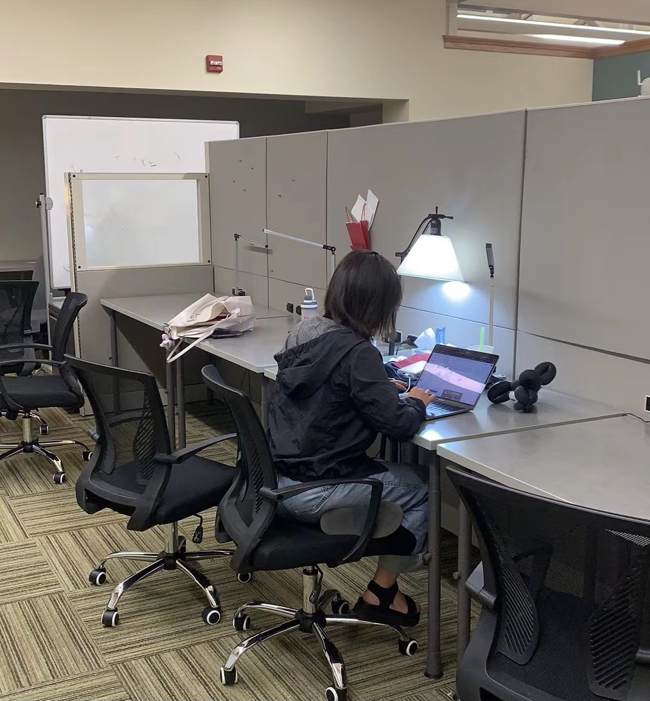

Master of Statistical Practice
Carnegie Mellon University
Affiliate
Ziyan Xia, Department of Statistics and Data Science
Contact:
Department of Statistics and Data Science
Carnegie Mellon University
318 FMS
Pittsburgh, PA 15213
I just started it.
Still working on new projects...
